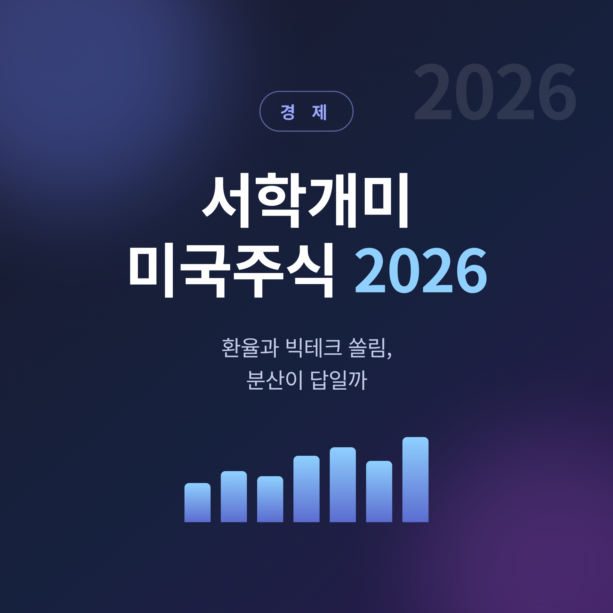
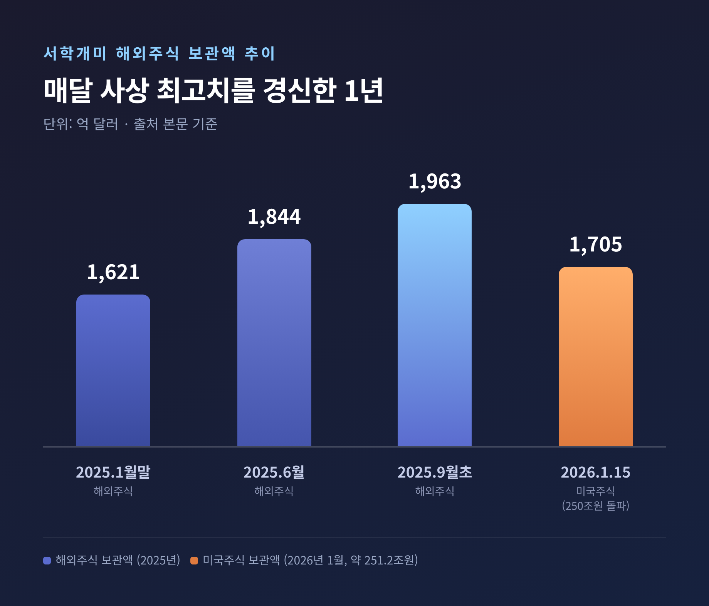
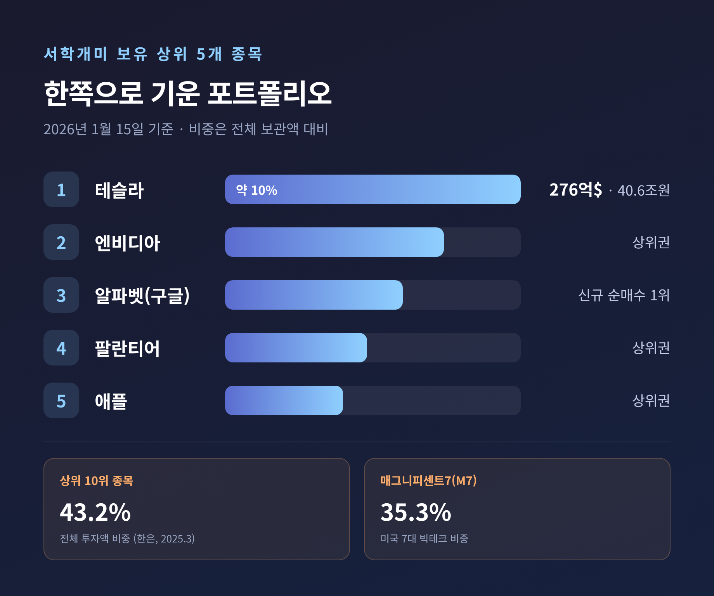
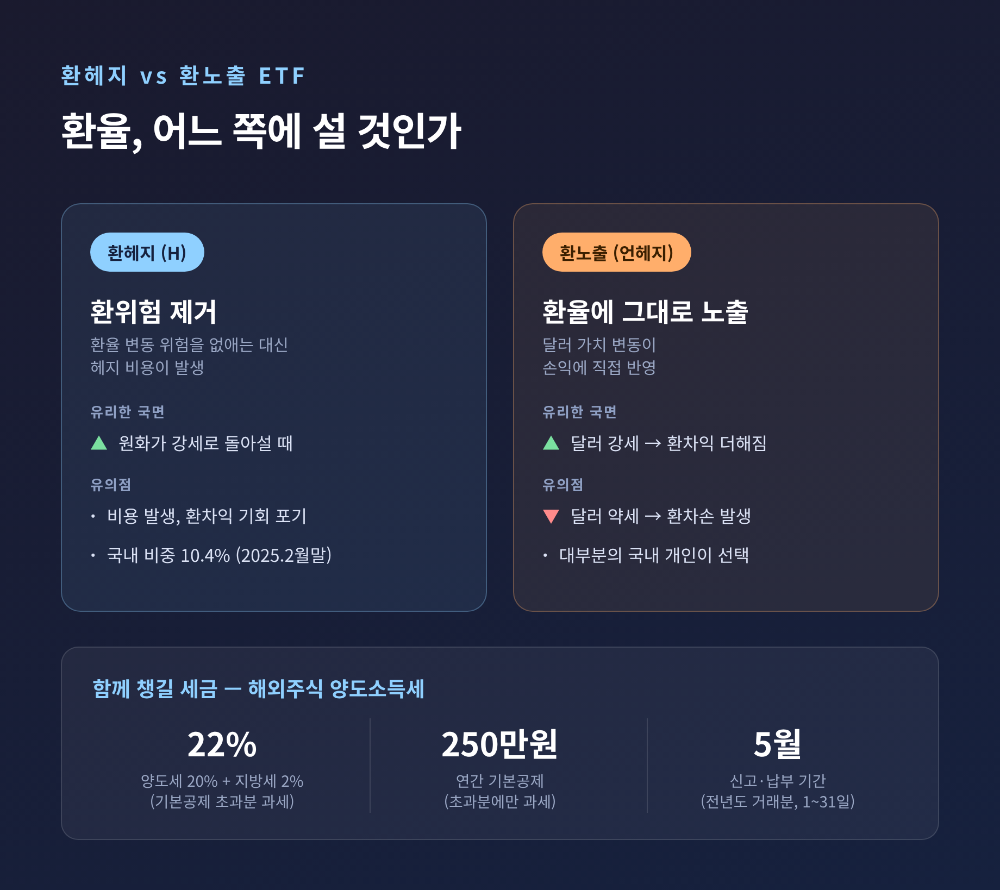
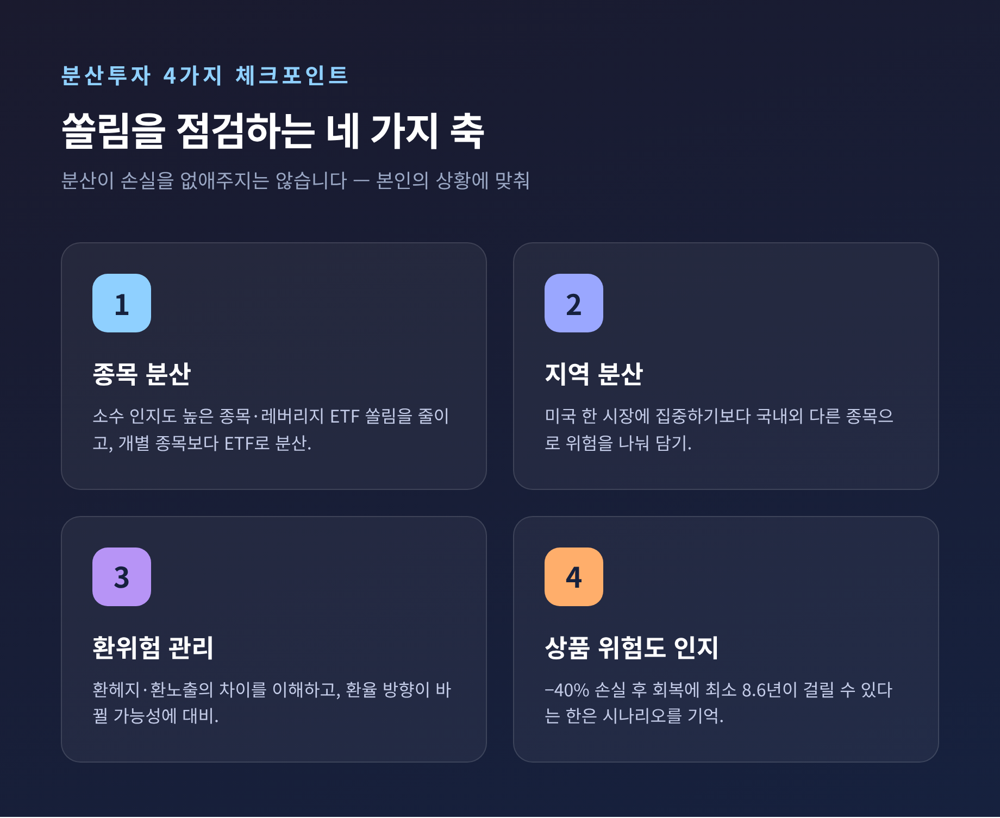

이번 글에서는 2026년 서학개미의 미국주식 투자 흐름을 정리해 보겠습니다. 보관액은 사상 최고치를 갈아치웠고, 환율은 다시 출렁입니다. 빅테크 쏠림과 분산투자 사이에서 무엇을 점검할지 짚어보려 합니다.
먼저 한 가지를 분명히 해두겠습니다. 이 글은 정보를 정리한 것이지 투자 자문이 아닙니다. 특정 종목을 사라는 권유도, 수익을 보장하는 약속도 아닙니다.
서학개미의 돈이 미국 시장으로 꾸준히 들어갔습니다.
2025년 해외주식 보관액은 매달 사상 최고치를 경신했습니다. 1월 말 1,621억 달러에서 잠시 주춤했다가, 6월에는 1,844억 달러까지 올랐고 9월 초에는 약 1,963억 달러를 기록했습니다.
그리고 2026년 1월 15일 기준, 미국주식 보관액은 약 1,705억 달러로 250조원을 넘어섰습니다. 2025년 말 대비 약 2주 만에 약 10.1조원이 늘어난 수치입니다.
규모가 커진 만큼, 그 무게를 어디에 싣고 있는지가 중요해졌습니다.

보유 종목을 들여다보면 쏠림이 뚜렷합니다.
2026년 1월 15일 기준 보유 1위는 테슬라로 약 276억 달러(약 40.6조원), 전체 보관액의 약 10%입니다. 이어 엔비디아, 알파벳(구글), 팔란티어, 애플 순입니다.
한국은행 금융안정상황 보고서(2025년 3월)는 더 구체적입니다. 투자 상위 10위 종목이 전체 투자액의 약 43.2%를, 미국 7대 빅테크인 매그니피센트7(M7)이 약 35.3%를 차지했습니다. 인지도 높은 소수 종목과 레버리지 ETF에 투자가 몰려 있다는 지적이었습니다.
흥미로운 점은 흐름이 조금씩 달라지고 있다는 것입니다.
예전엔 테슬라·애플·아마존 같은 빅테크가 포트폴리오 대부분을 채웠습니다. 지금은 AI 인프라·양자컴퓨팅·가상자산 등 테마와 지수형 ETF로 다변화하는 모습이 보입니다. 실제로 2026년 1월 1~19일 가장 많이 순매수한 종목은 테슬라가 아니라 알파벳(구글)이었습니다.
다만 해석에 주의가 필요합니다. '누적 보유' 1위는 여전히 테슬라이고, 바뀌는 것은 '신규 순매수' 1위입니다. 둘은 같은 말이 아닙니다.

미국주식을 담는 순간, 환율은 또 하나의 변수가 됩니다.
LG경영연구원은 2026년 원·달러 환율을 상반기 높은 수준에서 하반기 완만한 하락으로 보며 연평균 1,400원을 제시했습니다. 거시경제 전문가 설문에서도 85%가 연평균 1,400~1,450원을 예상했습니다.
그런데 현실은 전망 상단을 웃돌기도 했습니다. 2026년 1월 13일 환율이 다시 1,470원을 넘어섰습니다. 전망과 실제가 어긋날 수 있다는 사실을, 시장은 다시 한번 보여준 셈입니다.
여기서 환헤지가 등장합니다.
환헤지(H 표기)는 환율 변동 위험을 제거하는 대신 비용이 듭니다. 원화가 강세로 돌아설 때 유리합니다. 반대로 환노출(언헤지)은 환율에 그대로 노출돼, 달러 강세 땐 환차익이 더해지지만 달러 약세 땐 환차손이 납니다.
문제는 국내 개인 대부분이 환헤지를 하지 않고 있다는 점입니다. 주식형 해외 ETF 잔액 중 환헤지 비중은 2024년 말 14.3%에서 2025년 2월 말 10.4%로 오히려 낮아졌습니다. 고환율 국면에선 환노출이 이익을 보태줍니다만, 방향이 바뀌면 이야기가 달라집니다.

수익만 보다 보면 세금을 잊습니다.
해외주식 양도소득세는 연간 양도차익이 250만원을 초과하면 과세 대상입니다. 초과분에 세율 22%(양도소득세 20% + 지방소득세 2%)가 붙습니다. 한 해 순이익 1,000만원을 실현했다면 165만원을 냅니다. 신고·납부는 매년 5월 1일부터 31일까지, 전년도 거래분에 대해 진행합니다.
연 250만원 기본공제를 활용해 차익 실현 시점을 나누거나, 이익 종목과 손실 종목을 같은 해에 함께 실현하는 손익통산이 거론됩니다. 다만 세금은 개인 상황과 세법 개정에 따라 달라지므로, 실제 신고 때는 세무 전문가나 관할 세무서의 확인이 필요합니다.
분산은 더 무거운 이야기입니다.
한국은행은 시나리오 하나를 제시했습니다. 2022년처럼 미 증시가 부진해 연간 약 −40% 평가손실을 본 뒤 S&P500 추종 ETF로 원금을 회복하려면, 최소 8.6년이 걸린다는 분석입니다. 그래서 국내외 다른 종목으로 위험을 분산하고, 개별 종목보다 ETF를 통한 분산을 권했습니다.
물론 한계도 인정해야 합니다. 분산이 손실을 없애주지는 않습니다. 적합한 전략은 본인의 재무상황·목표·위험성향에 따라 다릅니다.

정리하면 이렇습니다.
서학개미의 돈은 사상 최대로 불어났고, 그만큼 빅테크와 환율이라는 두 변수에 깊이 묶여 있습니다. 한국은행은 같은 말을 반복해 왔습니다 — "이제는 분산투자가 필요할 때."
숫자는 기회를 말하지만, 동시에 쏠림의 위험도 말합니다.
지금 내 포트폴리오는 한쪽으로 기울어 있지는 않은지, 한 번쯤 차분히 들여다보시길 권합니다.
다시 강조드립니다. 본 글은 정보 정리이며 투자 자문이 아닙니다. 투자 판단과 책임은 본인에게 있습니다.